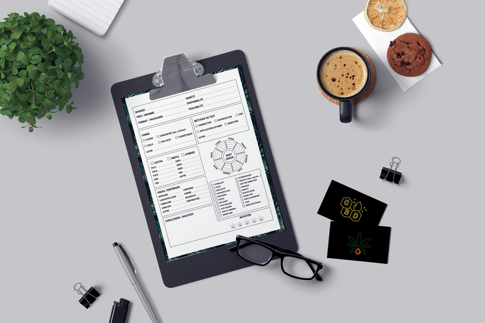
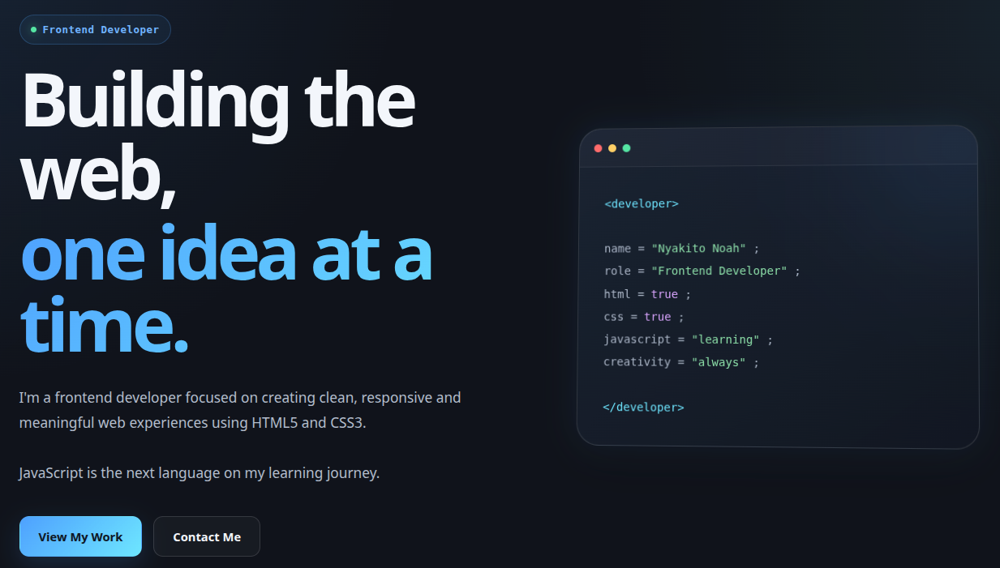

Project One: Inventory Tracker

A project designed to help track products, quantities, and inventory information in an organized way.
Here are some projects I have worked on or plan to develop.

A project designed to help track products, quantities, and inventory information in an organized way.

A personal website showcasing my skills, projects, experience, and interests in technology.

A future data visualization project focused on turning information into useful insights.